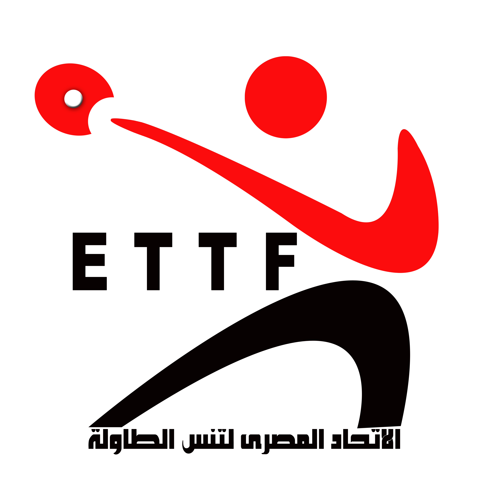

الاخبار
الطاوله يحدد موعد الدوره المجمعه رجال بعد بطولة السيدات
الاتحاد المصري لتنس الطاوله
الدولى تم في عام 1928 إلا أنها لم تواظب على عضويتها في الاتحاد الدولي إلا عندما أعيد انضمامها .إليه رسميا عام 1934 بعد تأسيس اتحادها
تعتبر مصر من الدول الرائدة في مجال تنس الطاولة على المستوى الاقلمية ،فقد تم تأسيس الاتحاد العربي لتنس الطاولة عام 1956 برئاسة "محمد نديم" .وقد إشترك في تأسيس هذا الاتحاد (10) دول عربية. أقيمت أول دورة رسمية بالإسكندرية عام 1956. استمر مقر هذا الاتحاد بالقاهرة منذ نشاته حتى عام .1976 حيث تم نقله إلى الرياض بالمملكة العربية السعودية .وفي عام 2001 تم انتخاب الاستاذ معتز عاشور أمينا لصندوق الاتحاد العربي لتنس الطاولة تم تكوين الإتحاد الإفريقي للعبة عام 1961 وكان مقره بالقاهرة. .وقد أقيمت البطولة الأفريقية الأولى بالإسكندرية عام 1962. وكان عدد الدول المشاركة (11) دولة تأسست "اللجنة الدولية لدول البحر المتوسط لتنس الطاولة" عام 1968، .حيث عين أنور السادات رئيساً لها وأمين أبو هيف نائباً للرئيس أقيمت الدورة الأولى بالإسكندرية عام 1968. .حققت مصر الجائزة الذهبية في دورة الألعاب الأفريقية ومنهم دينا مشرف وعمر عصر
اهم اللاعبين و اللاعبات
عمر عصر
خالد عصر
احمد صالح
محمد البيلي
دينا مشرف
يسرا حلمي
فرح عبدالعزيز
هنا جوده
مريم الهضيبي